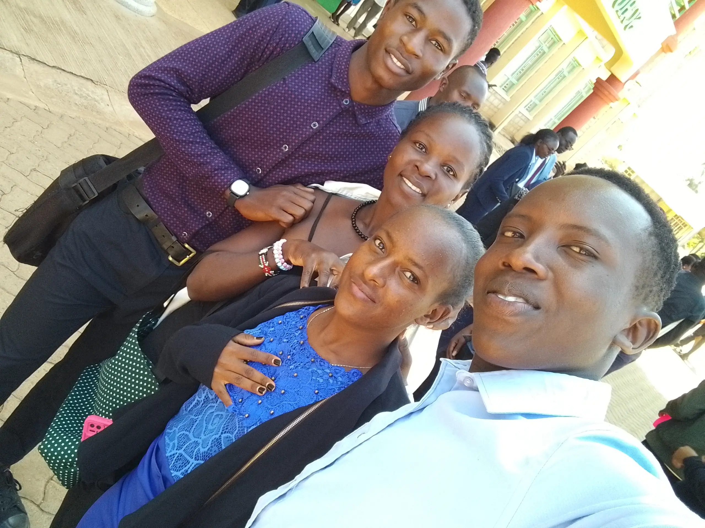
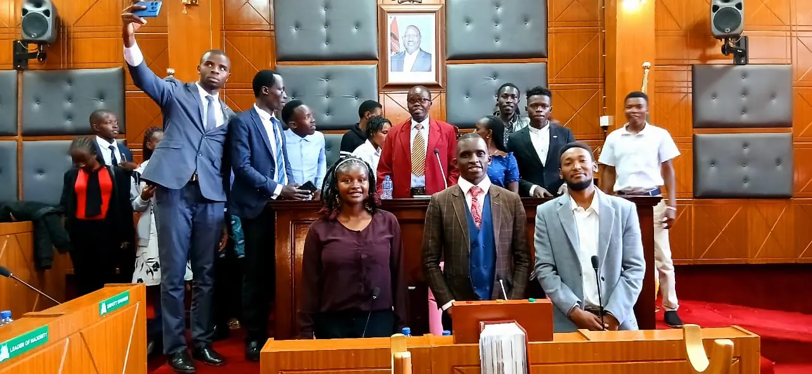
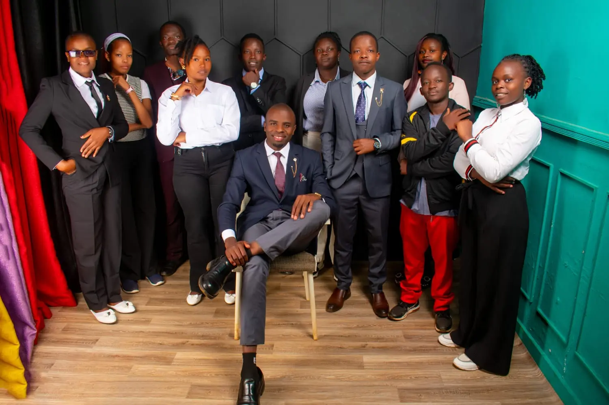

The official launch of the Association of Political Science of Moi University marked the beginning of a structured platform for students interested in governance and public affairs. It brought together like-minded individuals, introduced the association's vision and objectives, and created a sense of identity and belonging among members.
Impact: This event laid a strong foundation for the association by boosting membership, enhancing visibility within the university and setting the pace for future academic and leadership activities.
See Gallery
Members attended a powerful and thought-provoking lecture by Prof. PLO Lumumba, focusing on leadership, governance, and Africa's development. His message challenged students to think critically and embrace ethical leadership.
Impact: The lecture significantly influenced members' perspectives on leadership and governance, inspired intellectual engagement and strengthened the association's academic relevance by exposing members to real world insights from a renowned scholar.
See Gallery
The association organized a visit to the County Assembly, where members observed legislative proceedings and engaged with leaders on governance issues. This provided a practical learning experience beyond the classroom.
Impact: The visit bridged the gap between theory and practice, enhanced members' understanding of devolution and legislative processes and motivated students to actively participate in governance and public service.
See Gallery
The Annual General Meeting (AGM) provided a platform to evaluate the association's progress, address challenges, and set future goals. It also facilitated a smooth handover to new leadership. Notably, constitutional expert Nganga Muigai was present and offered in depth insights, helping to elaborate and clarify key aspects of the association's constitution, which was essential for strengthening its governance framework.
Impact: This event strengthened accountability and transparency within the association, ensured continuity of leadership and introduced fresh ideas and energy, which are essential for sustained growth and development.
See Gallery